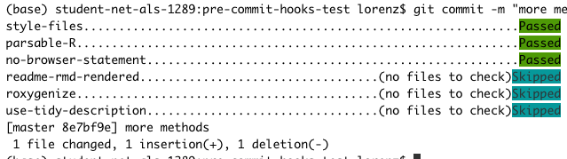

Pre-commit hooks are tests that run each time you attempt to commit. If the tests pass, the commit will be made, otherwise not. A very basic test is to check if the code is parsable, making sure you have not forgotten a comma, brace or quote.
The goal of this package is to twofold:
Provide a set of hooks that are useful when your git repo contains R code. You can find them under
vignette("available-hooks").Provide usethis-like functionality for common tasks such as installation and set-up and config file modification.
Installation
Please make sure you have conda installed. The rest can be handled from R:
# once on your system
remotes::install_github("lorenzwalthert/precommit")
precommit::install_precommit()
# once in every git repo either
# * after cloning a repo that already uses pre-commit or
# * if you want introduce pre-commit to this repo
precommit::use_precommit()This installs pre-commit and performs some other set-up tasks. If you don’t want to use conda, see vignette("manual-installation") for alternative installation methods.
Usage
The next time you run git commit, the hooks listed in your .pre-commit-config.yaml will get executed before the commit. The helper function precommit::open_config() let’s you open and edit the .pre-commit-config.yaml conveniently from the RStudio console. When any file is changed due to running a hook or the hook script errors, the commit will fail. You can inspect the changes introduced by the hook and if satisfied, you can attempt to commit again. Note that while some hooks change files (like the styler hook) so that they won’t fail when you attempt to commit again, some (like the lintr hook) will need your action before they pass at the next attempt. If all hooks pass, the commit is made. You can also temporarily disable hooks. If you succeed, it should look like this:

See the hooks provided by this repo under vignette("available-hooks"). You can also add other hooks from other repos, by extending the .pre-commit-config.yaml file, e.g. like this:
To update the hook revisions, run precommit::autoupdate().
Caution
Do not abort while hooks are running. Non-staged changes are stashed to a temp directory when the hooks are run and may not easily be recovered afterwards.
Because R is not officially supported as a langauge in the pre-commit framework (yet), there is no R package dependency management for the R hooks provided in this repo. If an R package that is needed by a hook is not yet installed, you might get this error:
In that case, just install the package with install.packages() once and try to commit again. All R dependencies of the pre-commit hooks provided in this repo are suggested dependencies of this R package, so if you want to install them all, just remotes::install_github("lorenzwalthert/precommit", dependencies = c("Imports", "Suggests")).
Documentation
The online documentation of this package only covers the functionality added on top of pre-commit by this package. Everything else is covered in the extensive online documentation of the pre-commit framework itself, including how to:
create pre-push hooks
create local hooks
and more
Links
- Browse source code at
https://github.com/lorenzwalthert/precommit
License
Community
Developers
- Lorenz Walthert
Maintainer